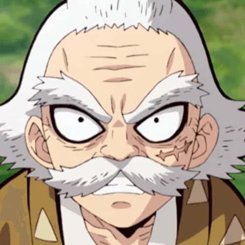

桑島慈悟郎（くわじま じごろう Kuwajima Jigorou）
- 配音 : 千葉繁（日本）；林谷珍（台灣）；盧傑群（Viu）、（TVB）（香港）
- 教導善逸和獪岳雷之呼吸的培育者，鬼殺隊前任鳴柱。臉上有一道大傷疤，右腳為義肢的老人。35歲時斷腿後從一線退出，隱居桃山成為培育者訓練新手斬鬼。 在善逸被未婚妻欺騙而欠債時替他還清債務，並強迫其每天進行地獄般的訓練。看似對善逸十分嚴厲，其實非常關心善逸，在善逸用盡一切辦法逃避訓練的時候，每一次都堅持把他抓回來，因為感受到他的用心，因此善逸也以「爺爺」來稱呼其師父。 後因弟子獪岳墮落成為食人鬼而切腹自盡以示負責，善逸在接受岩柱的特別訓練(柱合訓練)期間得知此消息後十分悲痛，並從此脫胎換骨，不再是以前那個膽小懦弱、總想著逃避的善逸。於無限城決戰中，斬殺獪岳後身負重傷陷入昏迷之際，看見在三途川對岸的恩師，在聽完善逸自述自己的無能時潸然淚下，並表示善逸是自己的驕傲。 在第二回人氣投票結果中，以45票獲得第54名。